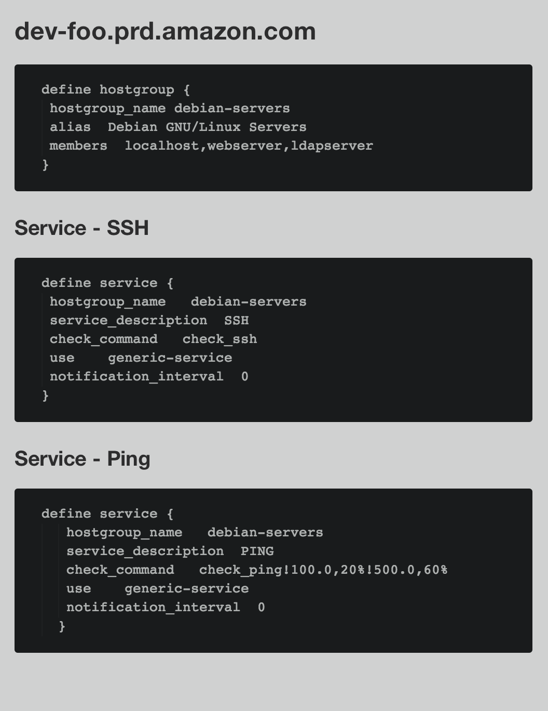

Automated Documentation of Monitoring Thresholds
Yes you need this
Problem
What are we are monitoring
- 10k machines
- 250k checks
- worldwide user base
Users needed to know what the current thresholds were for their machines
Tool Belt
Icinga 1x (Application)
fork of Nagios
text file based configurarion
one file per server
Gitlab (Single Source of Truth)
Open Source eq. of Github
LDAP based permissions
renders all .md files
Markdown (Markup Language)
easy to write
easy to render
can be treated as code
Requirements
easy to find
easy to update
easy to read
audit trail
Solution
- Bob opens a ticket to change the monitoring on foo-01.prd.aws.com
- monitoring updates the configuration file foo-01.prd.md
- the commit msg contains the ticket id
- Icinga has a check polling its configuration repo
- when a new commit is made pull the latest changes and apply bash fu
- monitoring updates the ticket with the commit id and link to the config file
End Result
https://gitlab.hal2k.com/aws/ldap/foo-01.prd.aws.com.md
